시각디자인기사 (2011-06-12 기출문제)
1과목: 시각디자인론
1. 독일공작연맹과 관련 없는 것은?
- 공업제품의 양질화와 규격화를 모색하였다.
- 아르누보의 심미주의에 반동하는 것이라 할 수 있다.
- 헤르만 무테지우스가 주도하였다.
- 순수 색채, 선에 기초한 개성적 창조를 추구하였다.
(정답률: 64%)

2. 문제를 보는 관점을 완전히 다르게 하여 이곳에서 연상되는 점과 관련성을 찾아내어 아이디어를 발상하는 방법은?
- 시네틱스법
- 브레인스토밍
- 입출력법
- 체크리스트법
(정답률: 85%)
3. 디자인 매니지먼트(Design management)의 개념으로 가장 적절한 것은?
- 경영차원에서 디자인의 결과를 선택하고 마케팅과 연결하는 개념
- 외부에 디자인을 의뢰할 때 체계적으로 관리하고 통제하며 평가하는 개념
- 경영차원에서 디자인 전반에 대하여 계획, 조직, 충원, 지휘, 통제하는 개념
- 디자인의 창의성과 기술적 문제가 대립할 경우 자원 활용 차원에서 조정하고 통제하는 개념
(정답률: 78%)
4. 상표권에 관한 내용 중 틀린 것은?
- 상표권의 존속기간은 상표권의 설정 등록이 있는 날부터 10년으로 한다.
- 상표사용자의 업무상의 신용유지를 도모하여, 산업발전에 이바지 하고 수용자의 이익보호를 목적으로 한다.
- 상표권의 존속기간은 상표권의 존속기간 갱신등록신청에 따라 5년씩 갱신할 수 있다.
- 상품의 품질을 오인하게 하거나 수요자를 기만할 염려가 있는 것은 상표등록을 받을 수 없다.
(정답률: 71%)
5. 익스테리어(Exterior)디자인과 관련된 산업 디자인 영역은?
- 시각전달 디자인
- 제품 디자인
- 환경 디자인
- 포장 디자인
(정답률: 80%)
6. 캐릭터 디자인에 대한 설명으로 틀린 것은?
- 기업이나 특정 제품에 대한 인지적 호과와 친근감을 갖게 한다.
- 캐릭터 중에서 비영리적 목적으로 사용되는 것을 마스코트라고 부른다.
- 캐릭터에 개성을 부여하기 위해서는 의인화, 시각적 과장 등을 사용한다.
- 캐릭터의 종류로는 브랜드 캐릭터, 이벤트 캐릭터, 코퍼레이트 캐릭터 등이 있다.
(정답률: 84%)
7. 디자인권이 발생하는 시기는?
- 설정등록시
- 디자인등록출원시
- 등록공고시
- 출원공개시
(정답률: 34%)
8. 디자인 분야를 평면, 준준 입체, 영상디자인으로 나눌 때, 준 입체 디자인 분야에 해당되는 것은?
- 다이어그램디자인
- 캘린더디자인
- 홀로그램
- 슈퍼그래픽디자인
(정답률: 56%)
9. 다음 디자인의 영역 중 주로 시각적인 전달수단을 이용하여 사람과 사람의 관계를 연결해 주는 것은?
- 산업 디자인
- 프로덕트 디자인
- 커뮤니케이션 디자인
- 환경 디자인
(정답률: 87%)
10. 다음 중 일러스트레이션에 대한 설명으로 거리가 먼 내용은?
- 사진, 도표, 도형 등을 포함한다.
- 의미성, 풍속성 등 직설적 매력을 가지고 있다.
- 구상적, 추상적 등 어떤 표현도 가능하다.
- 기계에 의한 것이 아닌 손으로만 그린 그림에 한정된다.
(정답률: 90%)
11. C.I 제작 과정의 전개가 순서대로 옳게 된 것은?
- 디자인 전개-조사와 분석-디자인 적용-디자인 실행
- 디자인 전개-디자인 분석-조사와 분석-디자인 실행
- 조사와 분석-디자인 전개-디자인 적용-디자인 실행
- 조사와 분석-디자인 적용-디자인 전개-디자인 실행
(정답률: 80%)
12. 러시아 혁명기의 대표적인 아방가르드 운동의 하나로서 건축, 회화, 그래픽, 산업디자인 등 조형예술의 전영역에 걸쳐 매우 급진적인 성격을 드러낸 디자인 사조는?
- 모더니즘
- 표현주의
- 다다이즘
- 구성주의
(정답률: 48%)
13. 심벌마크(symbol mark)의 설명으로 옳은 것은?
- 조직체의 이념, 목적, 성격 등을 시각적으로 상징화한 것이다.
- 기업의 브랜드에만 사용되는 그림 문자이다.
- 광고 및 홍보매체에 차별성과 주목성을 높이는 문자이다.
- 제품의 상징을 위해 특별 제작된 그림이다.
(정답률: 89%)
14. 신문, 잡지, 광고 등의 간접적인 경로를 거치지 않고, 우편형식에 의해 직접적으로 수신자에게 전달될 수 있는 매체는?
- POP
- DM
- CAD
- CIP
(정답률: 91%)
15. 적절한 레이아웃이 아닌 것은?
- 디자이너의 감각을 특히 중시한 레이아웃
- 홍보물의 성격과 독자를 고려한 레이아웃
- 전달하고자 하는 내용이나 이미지가 효과적은 레이아웃
- 대중의 시각적 공감을 얻을 수 있는 레이아웃
(정답률: 87%)
16. 다음 중 소비자의 광고수용과정의 원리는?
- ADICA
- AIDCA
- ADMIA
- AICDA
(정답률: 50%)
17. 컴퓨터(전자)편집전용프로그램의 대표적인 기능이 아닌 것은?
- 워드프로세싱기능
- 타입세팅기능
- 페이지 레이아웃기능
- 사진보정기능
(정답률: 80%)
18. 아이디어 발상과정에 노력하는 가운데 자신의 의지와는 상관없이 아이디어가 문뜩 떠오르는 사고과정의 한 유형은?
- 분석(Amalysis)
- 잠복(Incubation)
- 영감(Inspiration)
- 검증(Verification)
(정답률: 91%)
19. 다이어그램(Diagram)은 창조적인 표현방법의 선택이 필요하며, 동시에 그 시각적 선택이 주어진 자료의 명확하고 효과적인 전달을 해치치 않는 범위 안에서 디자인되어야 한다. 이러한 전제를 바탕으로 다이어그램의 범위가 아닌 것은?
- 동화의 문자내용에 맞춘 환상적인 일러스트레이션
- 열차 시간표와 같이 문자나 숫자로만 이루어진 도표
- 해부학같이 고도의 전문성이 필요한 의학을 위한 양식화된 그림
- 유전자 구조와 같이 눈으로 볼 수 없는 것을 표현한 구조도
(정답률: 71%)
20. 잡지편집에서 일러스트레이션의 블리드(Bleed)처리 효과는?
- 지면을 구조적으로 짜임세 있게 한다.
- 지면의 시각효과를 자유분방하게 한다.
- 지면에 시각적 질서를 가져다 준다.
- 일러스트 및 지면을 크고 넓어 보이게 한다.
(정답률: 50%)
2과목: 조형심리학
21. 시각디자인의 원리 중 대비를 설명한 것은?
- 시각적인 요소에서 정적이며 극적인 분위기를 만든다.
- 조화에 비해 정신적인 감동과 극적인 기쁨이 적다.
- 표현요소들의 반대, 대립, 변화 등에 의해 이루어진다.
- 시각적인 요소 상호간의 공통성에 관한 문제이다.
(정답률: 69%)
22. 다음 그림의 가운데 보이는 '새'로 보이기도 하고 '물고기'로 보이기도 하는데 이것은 형태주의 심리학의 어떤 원리를 응용한 것인가?
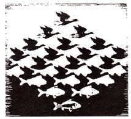
- 도형과 바탕의 원리
- 좋은 형태의 원리
- 유사성의 원리
- 근접성의 원리
(정답률: 74%)
23. 우리의 눈은 흐름과 잘 어울리는 것을 보려한다. 한방향으로 자연스럽게 진행되는 대상을 함께 속하는 것으로 지각하는 원리는?
- 연쇄성의 원리
- 유사성의 원리
- 폐쇄성의 원리
- 근접성의 원리
(정답률: 73%)
24. 색상이나 텍스쳐가 있는 종이, 옷감 또는 그 밖의 다른 재료들을 붙여 표현하는 기법은?
- 옵아트
- 콜라쥬
- 데칼코마니
- 데 스틸
(정답률: 74%)
25. 보이지 않는 부분을 표시하는 선은?
- 실선
- 의형선
- 은선
- 중심선
(정답률: 80%)
26. 시각표현요소를 중첩(overlapping)했을 때 가질 수 있는 이점은?
- 상호 수정과 간섭이 일어나기 때문에 각각 독립적으로 보여 진다.
- 보다 통일된 패턴 안에서 집중됨으로써 그 형태 관계를 강하게 만든다.
- 하나의 같은 시각 단위 안에서 일어나기 때문에 단조로운 느낌을 만든다.
- 중첩으로 표현되었다 하더라도 대상들의 평등관계는 유지된다.
(정답률: 72%)
27. 옵아트는 시지각의 특성 중 어느 현상을 이용한 분야인가?
- 착시
- 비례
- 항상성
- 원근법
(정답률: 75%)
28. 다음 그림들 중 명암과 시각적 질감을 만드는 점의 특성으로 제작된 것은?
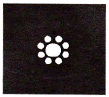
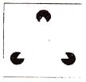
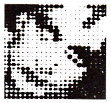
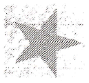
(정답률: 81%)
29. 다음 그림에서 면적(크기)의 착시는 어떻게 일어나는가? (단, 원형 A, B의 실제 크기는 같다.)
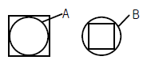
- 사각형 내에 있는 원형 A가 더 커 보인다.
- 사각형 외부에 있는 원형 B가 더 커 보인다.
- 원형 A와 원형 B의 경우는 보는 각도에 따라 크기가 다르다.
- 사각형과 원형은 대비가 크므로 착시가 일어나지 않는다.
(정답률: 84%)
30. 다음과 같은 도형을 볼 때 심리적으로 느낄 수 있는 지각상태로 가장 거리가 먼 것은?
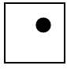
- 사각형의 틀에서 벗어나려는 원반의 유동성을 발견할 수 있다.
- 중심(中心) 따위는 특정한 방향으로 이끌리는 인력(引力)이 느껴질 수 있다.
- 주변의 사각형과 원 사이에서 어떤 내적인 긴장(tension)을 보여준다.
- 어둡기와 밝기에 대한 명암의 상태를 보여준다.
(정답률: 72%)
31. 다음 그림에서 숫자 2를 지각하는 이유를 가장 잘 설명하는 형태주의 심리학(Gestalt Psychology)의 원리는?
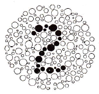
- 유사성의 원리
- 공통행선의 원리
- 근접성의 원리
- 친숙성의 원리
(정답률: 71%)
32. 시각적 질감을 설명한 것 중 옳은 것은?
- 물체의 빛에 대한 반응이다.
- 물체의 구조에 대한 반응이다.
- 면직물 표면의 특성만을 의미한다.
- 직접 만져서 확인할 수 있어야 한다.
(정답률: 83%)
33. ( )안에 순서대로 들어갈 내용은?
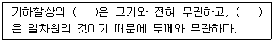
- 선, 면
- 점, 선
- 면, 점
- 색, 양
(정답률: 75%)
34. 다음 중 모든 변의 길이가 같고 내각의 크기가 모두 같은 형을 통틀어 무엇이라고 하는가?
- 직사각형
- 사다리꼴
- 마름모꼴
- 정다각형
(정답률: 85%)
35. 베르트하이머가 개념을 정리한 프라그난쯔(Pragnanz)의 원리는?
- 유사성
- 간결성
- 패쇄성
- 근접성
(정답률: 43%)
36. [밀렸다가 밀려들어오는 밀물과 썰물의 흐름, 봄 여름 가을 겨울의 변천과정, 시간에 따라 변하는 달의 모양등]과 같이 자연에서 나타나는 현상과 관련이 깊은 조형의 원리는?
- 점이(Gradation)
- 통일(Unity)
- 균형(Balance)
- 대조(Contrast)
(정답률: 73%)
37. 사물을 지속적이고 고정적인 존재로 인식하려는 지각, 경향은?
- 지각의 항상성
- 지각의 동질성
- 지각의 점진성
- 지각의 착오성
(정답률: 82%)
38. 바우하우스의 교수로서 「NewVision」「Vision in Motion」등 특히 조형의 요소로써 빛의 대한 연구를 한 사람은?
- 모홀리 나기
- 파울 클레
- 바실리 칸딘스키
- 요한네스 이텐
(정답률: 67%)
39. 각의 2등분 작도법에 관한 설명 중 틀린 것은?
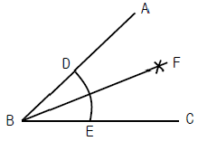
- ∠ABC의 꼭지점 B를 중심으로 임의의 원호 F를 그린다.
- D와 E를 중심으로 원호의 교점 F를 구한다.
- B와 교점 F를 통과하는 직선을 그리면 ∠ABC는 2등분 된다.
- ∠ABF = ∠CBF = 1/2 ∠ABC 이다.
(정답률: 58%)
40. 나뭇잎, 뿌리, 줄기, 열매 등 부분으로 보지 않고 나무라는 전체로 보는 것 즉, "전체는 부분의 합 이상이다" 라고 주장하는 학파는?
- 행동주의 심리학
- 인지주의 심리학
- 구성주의 심리학
- 행태주의(Gestalt) 심리학
(정답률: 60%)
3과목: 광고학
41. 마케팅 믹스의 4P가 아닌 것은?
- Promotion
- Product
- Price
- Positioning
(정답률: 81%)
42. 아이 캐처 (eye catcher)와 관련이 없는 것은?
- 시청자들의 눈이 처음 가는 포인트
- 시선을 끌기 쉬운 캐릭터
- 시력을 약화시키는 혼란요소
- 사람의 얼굴에서의 눈
(정답률: 71%)
43. 퍼블리시티(Publicity)의 수단이 아닌 것은?
- 인센티브
- 뉴스 릴리스의 배포
- 기자회견
- 스페셜 이벤트
(정답률: 73%)
44. 마케팅(Marketing)의 정의는?
- 제품계획, 가격책정, 유통과 판매 등의 촉진과 상호 연관된 기업 활동
- 기업의 이익과 관계되는 영업활동의 중심 시장
- 제품판매만을 극대화시키기 위한 기업 활동
- 시장 우위를 점유시키기 위한 시장 세분화와 판매 촉진 계획
(정답률: 70%)
45. 인간의 에로티시즘적 감정을 기초를 두어 사용하는 소구방법은?
- 유머 소구
- 위협 소구
- 성적 소구
- 이성적 소구
(정답률: 78%)
46. 광고주가 고객에 주는 노벨티(Novelty)와 관련이 없는 것은?
- 라이터
- 볼펜
- 카메라
- 경품
(정답률: 59%)
47. 다음 아이디어 발상법 가운데 전문가의 직관이나 통찰력을 이용한 미래 예측 방법은?
- 브레인스토밍법(Brainstorming Method)
- 매트릭스법(Matrix Method)
- 델파이법(Delphi Method)
- 인풑 아웃풑법(Input Output Method)
(정답률: 55%)
48. 인쇄광고에 여백을 강조하는 이유가 아닌 것은?
- 화면 가득히 문자가 들어서면 저항을 느낀다.
- 문자와 그림이 빈틈없이 만나면 답답한 느낌을 준다.
- 여백도 기능적 가치를 같는 공간이다.
- 여백은 많으면 많을수록 좋다.
(정답률: 84%)
49. 시장을 세분화하는데 있어서 연령, 성별, 직업, 교육수준, 종교 등으로 분류되는 변수는?
- 지리적 변수
- 인구통계적 변수
- 사회심리적 변수
- 행동특성적 변수
(정답률: 69%)
50. 메슬로우(Maslow)의 욕구 중 가장 상위욕구에 해당되는 것은?
- 자기존중 욕구
- 생리적 욕구
- 자이실현 욕구
- 사회적 욕구
(정답률: 69%)
51. 광고주가 광고대행사에 기대하는 것으로 거리가 먼 것은?
- 광고주 회사의 직원교육
- 매체의 확보와 관리
- 프리젠테이션 능력
- 광고계획의 입안
(정답률: 84%)
52. 소비자가 상품을 구매할 때, 동일 상표의 상품을 습관적, 의식적으로 반복 구매하는 것은?
- 브랜드 셰어(brand share)
- 브랜드 정책(brand policy)
- 브랜드 로열티(brand loyalty)
- 브랜드 리더(brand leader)
(정답률: 69%)
53. 인쇄매체 광고 제작물의 구성요소 중 조형적 요소가 아닌 것은?
- 헤드라인
- 보더라인
- 로고타입
- 레이아웃
(정답률: 46%)
54. 다음 중 광고의 순기능이 아닌 것은?
- 제품정보 제공기능
- 소비자 교육기능
- 구매충동 유발기능
- 상품구매 설득기능
(정답률: 50%)
55. 광고는 소비자에게 이익을 준다는 약속을 해야 하는데 이 약속이란 경쟁자에게 없는 것이어야 하며 강력해야 한다고 미국 광고회사의 로저 리브스(R. Reeves)가 주장한 광고 전략은?
- 브랜드 이미지 전략
- USP 전략
- AIIEE 전략
- 포지셔닝 전략
(정답률: 63%)
56. 매체효과 측정에서 GRP는 매체의 총 노출빈도를 말한다. ( )에 들어갈 내용은?
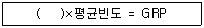
- 누적률
- 평균률
- 도달률
- 반복률
(정답률: 55%)
57. 동생이 라면을 먹고 싶다고 했다. 누나가 동의했다. 아빠는 태양라면이 좋겠다고 말했다. 엄마가 사왔다. 그날 저녁은 온 가족이 라면으로 저녁식사를 했다. 이때 누나의 역할은?
- 구매자, 소비자
- 영향력 행사자, 소비자
- 의사결정자, 소비자
- 제안자, 영향력 행사자
(정답률: 53%)
58. ( )안에 들어갈 알맞은 단어는?
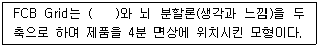
- 척도
- 관여도
- 이해도
- 인지도
(정답률: 35%)
59. AIDMA 원칙이 옳게 나열된 것은?
- Attention - Interest - Dimension - Mood - Action
- Attention - Interest - Desire - Memory - Action
- Attention - Innovation - Diemand - Memory - Action
- Attention - Image - Decision - Manner – Action
(정답률: 77%)
60. 광고 커뮤니케이션의 다섯 가지 요소는?
- 송신자, 매체, 시장, 소비자, 반응
- 송신자, 메시지, 매체, 수신자, 반응
- 송신자, 수신자, 제품, 시장, 반응
- 송신자, 제품, 메시지, 시장, 수신자
(정답률: 52%)
4과목: 색채학
61. 아파트 건축물의 색채기획시 고려해야 할 사항이 아닌 것은?
- 개인적인 기호에 의하지 않고 객관성이 있어야 한다.
- 주변 환경과 관계없이 독특한 디자인으로 색채조절을 한다.
- 전체적으로 질서가 있어야 하며 적당한 변화가 있어야 한다.
- 주거민을 위한 편안한 디자인이 되어야 한다.
(정답률: 85%)
62. KS산업표준에 있지 않은 표색계는?
- NCS 표색계
- 먼셀 표색계
- L*a*b*표색계
- X Y Z 표색계
(정답률: 50%)
63. 색의 온도감에 관한 설명 중 옳은 것은?
- 빨강, 노란색은 한색이다.
- 무채색에서 높은 명도의 색은 난색이다.
- 자주, 청록색은 중성색이다.
- 녹색은 중성색이고, 주황색은 난색이다.
(정답률: 71%)
64. 한국의 오방색과 방향의 연결로 옳은 것은?
- 청색 – 동
- 적색 - 서
- 황색 – 남
- 백색 - 북
(정답률: 79%)
65. 오스트발트 색상환은 무엇을 기본으로 하여 만들어 졌는가?
- 먼셀의 5원색
- 뉴턴의 프리즘
- 헤링의 4원색
- 영,헬름흘츠의 3원색
(정답률: 70%)
66. 정량적(定量的)색채 조화론으로 1944년에 발표되었으며, 고전적인 색채조화의 기하학적 공식화, 색채조화의 면적색채조화의 적용되는 심미도 등의 내용으로 구성되어 있는 것은?
- 쉐브럴(M.E, Chevreul)의 조화론
- 져드(judd)의 조화론
- 그레이브스(M.Graves)의 조화론
- 문(P.Moon)과 스펜서(D.E.Spencer)의 조화론
(정답률: 73%)
67. 무대 조명의 혼색방법과 관계가 깊은 것은?
- 병치가법혼색
- 동시가법혼색
- 계시가법혼색
- 평균가법혼색
(정답률: 53%)
68. 명소시에서 암쇠로 이행할 때 붉은 색은 어둡게 되고 녹색과 파랑은 상대적으로 밝게 보이는 현상은?
- 베졸드 현상
- 맥스웰 현상
- 스펙트럼 현상
- 푸르킨예 현상
(정답률: 74%)
69. 영,헬름흘츠의 3원색설에 따라 녹색과 빨강의 시세포가 동시에 흥분할 때 생기는 색각은?
- 시안(cyan)
- 마젠타(magenta)
- 검정(black)
- 노랑(yellow)
(정답률: 56%)
70. 오스트발트의 조화 배열 중 등흑색 조화에 해당하는 색으로 연결된 것은?
- ie - ia – pc
- ea - ie - ni
- ge - le – pe
- pn - pg – pa
(정답률: 64%)
71. 색각 항상성이란?
- 고명도의 색은 팽창해 보이고 저명도의 색은 수축되어 보이는 현상
- 빛의 자극이 제거된 후에도 계속해서 생기는 시감각
- 반사광의 공간분포에 의해서 생기는 물체 표면 지각의 속성
- 조명 및 관측조건이 변화해도 물체색이 별로 변화되어 보이지 않는 현상
(정답률: 75%)
72. 다음 중 색입체에 관한 설명으로 틀린 것은?
- 색의 3속성을 3차원 공간에다 계통적으로 배열한 것이다.
- 오스트발트 표색계의 색입체는 타원과 같은 형태이다.
- 먼셀 표색계의 색입체는 나무의 형태를 닮아 color tree 라고 한다.
- 색입체의 중심축은 무채색 축이다.
(정답률: 59%)
73. 후기 인상파 화가인 쇠라(seurat)의 회화원리로 사용된 기법은?
- 색료혼합
- 보색혼합
- 회전혼합
- 병치혼합
(정답률: 66%)
74. 상품 제작시 전달 색채계획의 첫 조건은?
- 쇼윈도의 이미지를 높인다.
- 상품의 가치를 시각에 돋보이게 한다.
- 상품의 모양을 생각한다.
- 점포의 분위기를 높인다.
(정답률: 62%)
75. 다음 중 현색계(color appearance system)와 관계있는 것은?
- 색광의 색
- 빛의 색
- 심리, 물리 색
- 물체의 색
(정답률: 53%)
76. 비렌(Birren)의 색과 형의 연결로 틀린 것은?
- 빨강색 – 정사각형
- 노랑색 - 삼각형
- 파랑색 – 육각형
- 주황색 - 직사각형
(정답률: 64%)
77. 오스트발트 표색계의 색표기 방법인 '8pa' 중 'p'가 의미하는 것은?
- 색상기호
- 흑색량
- 백색량
- 순색량
(정답률: 48%)
78. 용도별 실내색채에 관한 다음 설명 중 틀린 것은?
- 한색계의 색채 공간은 정신적 활동에 적합하다.
- 병원 수술실에 가장 많이 쓰이는 색은 녹색이다.
- 공장에서 안전이 요구되는 부위에는 안전색채를 배색하는 것이 좋다.
- 사무실 벽은 순백색으로 배색한 것이 눈의 피로를 줄여서 좋다.
(정답률: 73%)
79. 빛에너지가 꽃에 부딪쳐 일어나는 표면색은?
- 물체색
- 공간색
- 간섭색
- 광원색
(정답률: 69%)
80. 먼셀의 색입체에서 중심부쪽으로 갈수록 나타나는 현상 중 옳은 것은?
- 명도는 중명도가 되며 채도는 낮아진다.
- 명도가 낮아지며 채도는 높아진다.
- 명도는 중명도가 되며 채도는 변화 없다.
- 명도는 변화가 없으며 채도는 중간이 된다.
(정답률: 62%)
5과목: 사진 및 인쇄제판론
81. 현상할 때 미노출 부분의 포그(fog)현상을 방지하기 위해 첨가하는 물질은?
- 현상촉진제
- 보항제
- 억제제
- 현상주약
(정답률: 58%)
82. 인간이 육안으로 느끼는 것과는 전혀 다른 시각적 효과를 얻고자 할 때 사용하며 700nm 이상의 장파장광에 주로 감광되는 필름은?
- 자외선 필름
- 팬크로매틱 필름
- 리스 필름
- 적외선 필름
(정답률: 67%)
83. 다음 중 컬러사진용 확대기에 주로 사용하는 필터는?
- 다이크로익 필터
- PL 필터
- ND 필터
- 색온도변환 필터
(정답률: 48%)
84. 초점거리가 50mm이고, 렌즈의 밝기가 1:2인 렌즈의 유효 구경은 얼마인가?
- 12.5mm
- 25mm
- 50mm
- 100mm
(정답률: 75%)
85. 인쇄의 4방식 중 인쇄판이 유연하므로 평면, 곡면 등에 인쇄가 가장 자유로운 방식은?
- 볼록판
- 오목판
- 평판
- 공판
(정답률: 48%)
86. 다음 중 국판(A5) 책자의 크기로 옳은 것은?
- 74 × 1⑤mm
- 1⑤ × 148mm
- 148 × 210mm
- 210 × 297mm
(정답률: 80%)
87. 식물성 기름을 불완전 연소시켜 얻은 흑색 분말로서 검정잉크의 안료로 사용되는 것은?
- 카본블랙
- 티탄백
- 탄산칼슘
- 감청
(정답률: 70%)
88. 달리고 있는 자동차의 동감을 표현하기 위한 가장 적절한 촬영 기법은?
- BLUR
- RELIEF
- PANNING
- ZOOMING
(정답률: 82%)
89. 가이드 넘버가 24 이고 피사체까지의 거리가 3m 라고 한다면 렌즈의 조리개 값은?
- f/가 5.6
- f/8
- f/11
- f/16
(정답률: 86%)
90. 다음 중 피사계 심도가 깊고 원근감이 과장되는 렌즈는?
- 망원렌즈
- 표준렌즈
- 광각렌즈
- 마이크로렌즈
(정답률: 53%)
91. 표지를 속장보다 조금 크게 만들어 약간 튀어나오게 하며 사전류에 많이 사용되는 제책 방식은?
- 양장 제책
- 반양장 제책
- 호부장 제책
- 중철 제책
(정답률: 75%)
92. 피사체의 위쪽 또는 뒤쪽에 높게 설치하는 라이트로서 피사체의 윤곽을 따라 강한 하이라이트를 내는 조명은?
- 역광
- 측광
- 사광
- 정면광
(정답률: 74%)
93. 노광부족이나 현상부족으로 농도가 엷을 때나 콘트라스트가 저하된 네거티브 농도의 콘트라스트를 높이기 위한 사진처리 방법은?
- 보력
- 감력
- 토닝
- 조색
(정답률: 65%)
94. PS판의 특징에 대한 설명으로 틀린 것은?
- 제판 처리가 신속, 간단하다.
- 암반응이 적고, 잔반응이 없다.
- 온, 습도의 영향을 거의 받지 않는다.
- 감광액의 두께가 불균일하다.
(정답률: 74%)
95. 다음 중 인쇄의 5요소에 해당되지 않는 것은?
- 원고
- 인쇄판
- 인쇄작업자
- 잉크
(정답률: 73%)
96. 렌즈의 거리계를 무한대에 맞추었을 때 렌즈의 제 2주점으로부터 필름 면까지의 거리를 무엇이라고 하는가?
- 화상원
- 초점거리
- F stop
- 피사계 심도
(정답률: 60%)
97. 홀로그램(Hologram)은 주로 빛의 어떠한 현상을 이용한 입체 사진인가?
- 간섭
- 반사
- 편광
- 굴절
(정답률: 72%)
98. 다음 중 콘트라스트가 강한 인화를 얻기 위한 가장 옳은 방법은?
- 감감현상을 한다.
- 경조현상액을 사용한다.
- 2호 인화지를 사용한다.
- 현상액의 희석비율을 높인다.
(정답률: 58%)
99. 마름모꼴로 되어 있으며, 부드러운 효과를 얻을 수 있어 인물 사진에 주로 사용되는 망점은?
- 체인 도트(Chain dot)
- 스퀘어 도트(Square dot)
- 라운드 도트(Roung dot)
- 레스피 도트(Respi dot)
(정답률: 48%)
100. 인쇄물 표면가공의 목적에 해당되지 않는 것은?
- 인쇄물에 광택을 준다.
- 잉크의 퇴색을 방지한다.
- 인쇄물의 내구성을 높인다.
- 재활용을 쉽게 한다.
(정답률: 79%)